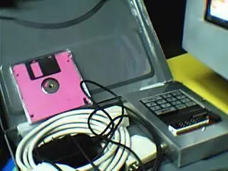
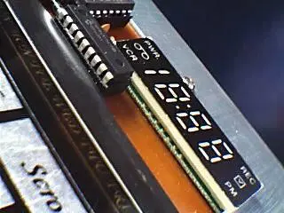

<meta name="viewport" content="width = device-width, initial-scale = 1, minimum-scale = 1, maximum-scale = 1, user-scalable = 0, viewport-fit = cover, shrink-to-fit = no">
<link rel="stylesheet" href="assets/css/style.css" />
<style>
	:root {
		--size-header: 2.25rem;
		--size-accordion-title: 1.25rem;
		--size-accordion-content: 1rem;
		--animation-speed: 100;
		--slide-ease: cubic-bezier(0.86, 0, .07, 1);
		--slide-duration: calc(400ms * 100 / var(--animation-speed));
		--slide-delay: calc(450ms * 100 / var(--animation-speed));
		--circle-duration: calc(900ms * 100 / var(--animation-speed));
	}
	*,
	*::before,
	*::after {
		position: relative;
		left: 0;
		top: 0;
		box-sizing: border-box;
	}
	a,
	p,
	h1 {
		margin: 0;
	}
	body {
		margin: 12px;
		overflow: hidden;
	}
	main {
		padding: 0 96px;
		position: fixed;
		top: 76px;
		width: 100%;
		height: calc(100vh - 124px);
		font-weight: 600;
		scroll-behavior: smooth;
		scroll-padding-top: 1rem;
		animation: fadeIn 1000ms ease;
        -webkit-animation: fadeIn 1000ms ease;
		overflow-y: scroll;
	}
	@keyframes fadeIn {
        from {
            opacity: 0;
        }
        to {
            opacity: 1;
        }
    }
    @-webkit-keyframes fadeIn {
        from {
            opacity: 0;
        }
        to {
            opacity: 1;
        }
    }
	@media only screen and (max-width:1024px) and (orientation:landscape) {
	}
	@media only screen and (max-width:480px) {
		main {
			padding: 0 24px;
			top: 12px;
			height: calc(100vh - 89px);
		}
	}
	@media only screen and (min-width:481px) and (max-width:768px) {
		main {
			padding: 0 24px;
			top: 12px;
			height: calc(100vh - 89px);
		}
	}
	main > h1 {
		padding: 0;
		font-size: var(--size-header);
		margin-bottom: 1.25rem;
        color: white;
	}
	main > h2 {
		margin-bottom: 1rem;
        color: white;
	}
	::selection {
		background-color: rgba(0, 0, 0, .4);
	}
	.accordion {
		display: grid;
		--circle-x: 1.8rem;
		--circle-y: 0;
		--circle-r: 200%;
		--circle-bg: rgba(255, 255, 255, .1);
		color: white;
		background-color: var(--circle-bg);
		background: rgba(255, 255, 255, .1);
		backdrop-filter: blur(20px);
		border: 1px solid rgba(255, 255, 255, .2);
		margin-bottom: 1rem;
		border-radius: min(8px, .5rem);
		grid-template-rows: 0fr 0fr;
		transition-timing-function: var(--slide-ease);
		transition-duration: 200ms, 200ms, var(--slide-duration);
		transition-property: opacity, box-shadow, grid-template-rows;
		transition-delay: 0ms, 0ms, var(--slide-delay);
		box-shadow: 0 0 0 2px rgba(0, 0, 0, .1);
		opacity: .8;
	}
	.accordion:not(:target):hover {
		box-shadow: 0 25px 50px rgba(0, 0, 0, .15), inset 0 1px 0 rgba(255, 255, 255, .3);
	}
	.accordion:not(:target):active {
		opacity: 1;
		box-shadow: 0 20px 40px rgba(0, 0, 0, .1), inset 0 1px 0 rgba(255, 255, 255, .2);
	}
	.accordion,
	.content {
		overflow: hidden;
	}
	.accordion:target {
		--d: 90deg;
		grid-template-rows: 0fr 1fr;
		transition: grid-template-rows var(--slide-ease) var(--slide-duration) var(--slide-delay);
	}
	.wrapper {
		padding-block: 0 1.05rem;
		padding-inline: 1.25rem;
	}
	.wrapper div {
		display: flex;
		flex-wrap: wrap;
		flex-direction: row;
		justify-content: center;
	}
	.wrapper div img {
		margin: 12px;
	}
	@media only screen and (max-width:480px) {
		.wrapper div img {
			margin: 12px;
			object-fit: cover;
		}
	}
	.content {
		font-size: var(--size-accordion-content);
		line-height: 140%;
	}
	.content p {
		margin-bottom: 1rem;
	}
	.content a {
		color: currentColor;
		font-weight: 800;
		text-decoration: underline;
	}
	main :last-child,
	.content :last-child {
		margin-bottom: 0;
	}
	.title a {
		padding: 1rem 1.25rem;
		font-size: var(--size-accordion-title);
		font-weight: 800;
		color: currentColor;
		text-decoration: none;
		display: flex;
		flex-direction: row;
		place-items: center;
	}
	.title a::before {
		--chevron-icon: url("data:image/svg+xml,%3Csvg xmlns='http://www.w3.org/2000/svg' viewBox='0 0 320 512'%3E%3C!--! Font Awesome Pro 6.4.0 by @fontawesome - https://fontawesome.com License - https://fontawesome.com/license (Commercial License) Copyright 2023 Fonticons, Inc. --%3E%3Cpath fill='white' d='M310.6 233.4c12.5 12.5 12.5 32.8 0 45.3l-192 192c-12.5 12.5-32.8 12.5-45.3 0s-12.5-32.8 0-45.3L242.7 256 73.4 86.6c-12.5-12.5-12.5-32.8 0-45.3s32.8-12.5 45.3 0l192 192z'/%3E%3C/svg%3E");
		content: "";
		left: 0;
		top: 0;
		width: .65rem;
		aspect-ratio: 320 / 512;
		display: inline-block;
		margin-right: .75rem;
		transform: rotate(var(--d, 0deg));
		transition: transform var(--slide-ease) var(--slide-duration) var(--slide-delay);
		mask-image: var(--chevron-icon);
		mask-size: 100% 100%;
		-webkit-mask-image: var(--chevron-icon);
		-webkit-mask-size: 100% 100%;
		background-color: currentColor;
	}
	.accordion::before,
	.accordion::after {
		content: "";
		position: absolute;
		width: 100%;
		height: 100%;
		background-color: var(--circle-bg);
		mix-blend-mode: difference;
		transform-style: preserve-3d;
		transition-timing-function: ease;
		transition-property: opacity, clip-path, visibility;
		pointer-events: none;
		clip-path: circle(var(--r) at var(--circle-x) var(--circle-y));
		border-radius: inherit;
		z-index: 4;
	}
	.accordion::before {
		--r: 0%;
		transition-delay: var(--circle-duration), var(--circle-duration), 0ms;
		transition-duration: 0ms, var(--circle-duration), 0ms;
		opacity: 0;
	}
	.accordion:target::before {
		--r: var(--circle-r);
		transition-delay: 0ms, 0ms, 0ms;
		transition-duration: 0ms, var(--circle-duration), 0ms;
		opacity: 1;
	}
	.accordion::after {
		--r: var(--circle-r);
		transition-delay: 0ms, 0ms, var(--circle-duration);
		transition-duration: 0ms, var(--circle-duration), 0ms;
		visibility: hidden;
		opacity: 1;
	}
	.accordion:target:after {
		--r: 0%;
		transition-delay: 0ms, 0ms, 0ms;
		transition-duration: 0ms, 0ms, 0ms;
		visibility: visible;
		opacity: 0;
	}
	.title a:focus-visible {
		background-color: hsl(0, 100%, 90%);
		outline: none;
	}
	.accordion:target .title a:focus-visible {
		background-color: hsl(183, 100%, 93%);
	}
    .network-nodes {
        position: absolute;
        opacity: .13;
        z-index: -1;
    }
</style>
<canvas class="network-nodes"></canvas>
<script src="assets/js/network-nodes.js"></script>
<main>
	<h1>#TheNeoVerse FAQS</h1>
	<section class="accordion" id="what-we-do">
		<h1 class="title"><a href="#what-we-do">What we do?</a></h1>
		<div class="content">
			<div class="wrapper">
				<p><strong>1. Seamless 360° Virtual Tour Integration</strong></p>
				<p>Step into the future of digital exploration. We make it incredibly easy to upload and integrate panoramic 360° photos from your 360 cameras into stunning, interactive virtual tours. Whether you're showcasing real estate, tourism destinations, educational spaces, or creative environments, our platform turns your static images into immersive, navigable experiences that captivate and engage your audience.</p>
				<p><strong>2. Immersive 3D Asset Visualization with Realistic Physics</strong></p>
				<p>Bring your 3D projects to life like never before. Our advanced rendering engine and real-time physics simulation technology allow you to seamlessly upload and integrate your 3D models into fully interactive, visually compelling virtual environments. Whether you're an architect, game designer, educator, or digital artist, you can share your work with friends, clients, or the public, letting them explore, interact with, and truly appreciate your creative vision in a dynamic online space.</p>
				<p><strong>3. Built-in Economic Infrastructure for Virtual Worlds</strong></p>
				<p>Monetize your digital realms with ease. Our platform includes an offline-capable electronic cash system that supports secure, efficient transactions within your virtual economy. This allows users to trade, buy, or sell digital goods and services in your virtual world, even in scenarios where online connectivity is limited, making it ideal for games, metaverse projects, digital marketplaces, and more.</p>
			</div>
		</div>
	</section>
	<section class="accordion" id="How-do-virtual-tours-works">
		<h1 class="title"><a href="#How-do-virtual-tours-works">How do virtual tours works?</a></h1>
		<div class="content">
			<div class="wrapper">
				<p>Virtual tours are immersive digital experiences that allow users to explore real-world places from the comfort of their own device. Using high-resolution images, 360-degree photography, and sometimes even 3D modeling or video, virtual tours recreate the feeling of being physically present in a location.</p>
				<h3><strong>The Technology Behind the Scenes</strong></h3>
				<p><strong>360-Degree Photography & Videography</strong></p>
				<p>Professional-grade cameras capture panoramic views of a space from every angle. These images are then stitched together using specialized software to create a seamless, interactive experience.</p>
				<p><strong>3D Scanning & Modeling</strong></p>
				<p>Advanced tools like LiDAR or Matterport scanners map the physical dimensions of a space in 3D, offering users a "walk-through" experience that feels realistic and spatially accurate.</p>
				<p><strong>Interactive Elements</strong></p>
				<p>Hotspots, clickable icons, and embedded multimedia (like audio guides, videos, and descriptions) enhance engagement, allowing users to interact with objects or learn more about specific areas within the tour.</p>
				<h3><strong>Cloud-Based Hosting & Web Integration</strong></h3>
				<p>Virtual tours are typically hosted online and embedded into websites, apps, or even VR headsets. They are accessible from desktops, tablets, and smartphones, no downloads required.</p>
				<p><strong>Where Virtual Tours Shine</strong></p>
				<p>Real Estate: Explore homes and apartments before visiting in person.</p>
				<p>Museums & Galleries: Experience art and history from around the world.</p>
				<p>Hospitality: Preview hotels, resorts, and event venues.</p>
				<p>Education: Take campus tours without stepping foot on school grounds.</p>
				<p>Tourism: Discover destinations and landmarks globally.</p>
				<p></p>
				<p>Virtual tours aren't just digital maps, they're powerful storytelling tools that blend technology, creativity, and convenience. Whether you're selling, showcasing, or simply sharing, they bring your world to life in a whole new way.</p>
			</div>
		</div>
	</section>
	<section class="accordion" id="How-do-virtual-experience-works">
		<h1 class="title"><a href="#How-do-virtual-experience-works">How do virtual experience works?</a></h1>
		<div class="content">
			<div class="wrapper">
				<p>Virtual experiences blend cutting-edge technology with immersive storytelling to transport users into digital worlds that feel remarkably real, all without leaving their physical space.</p>
				<p>At the core, virtual experiences use <strong>Virtual Reality (VR), Augmented Reality (AR)</strong>, or <strong>Web-based 3D environments</strong> to simulate environments, interactions, and sensations. These technologies combine high-definition visuals, spatial audio, haptic feedback, and responsive interfaces to engage your senses and emotions.</p>
				<p>Whether you're exploring a virtual museum, attending a concert in the metaverse, walking through a real estate property online, or training for a job in a simulated environment, here's how it works:</p>
				<h3><strong>The Tech Behind the Magic</strong></h3>
				<p><strong>VR Headsets & Devices: </strong>Tools like Oculus, HTC Vive, or even smartphones transport users into fully immersive 3D environments.</p>
				<p><strong>AR Apps: </strong>Apps overlay digital elements onto the real world through your phone or smart glasses, enhancing your physical environment with interactive data or visuals.</p>
				<p><strong>3D Engines: </strong>Platforms like Unity or Unreal Engine build lifelike, interactive spaces where everything from lighting to movement is simulated in real time.</p>
				<p><strong>Cloud & Web Integration: </strong>Many virtual experiences are now accessible directly through browsers, no downloads, just instant access via the cloud.</p>
				<h3><strong>Why It's So Powerful</strong></h3>
				<p><strong>Emotional Impact: </strong>Virtual experiences aren't just visual, they're deeply emotional. They place you at the heart of the story or scenario.</p>
				<p><strong>Limitless Creativity: </strong>Anything imagined can be built, from fantastical worlds to perfect replicas of real-life places.</p>
				<p><strong>Real-Time Interaction: </strong>Users can engage, communicate, and collaborate within virtual environments just like in the real world.</p>
			</div>
		</div>
	</section>
	<section class="accordion" id="How-do-electronic-cash-works">
		<h1 class="title"><a href="#How-do-electronic-cash-works">How do electronic cash works?</a></h1>
		<div class="content">
			<div class="wrapper">
				<p>In a world increasingly shaped by virtual experiences, gaming realms, simulations, immersive education, and augmented realities, there's a new kind of money emerging. One that doesn't rely on banks, networks, or even the internet.</p>
				<p><strong>It's offline. It's instantaneous. It's transferred with a QR code.</strong></p>
				<p>This is <strong>next-generation electronic cash,</strong> a digital currency built exclusively for virtual spaces, where value can be exchanged without touching the real-world financial system, and without being online.</p>
				<h3><strong>How It Works: The Power of QR-Based Cash</strong></h3>
				<p>1. <strong>Digital Creation</strong></p>
				<p>Electronic cash is generated by a virtual platform, like a game engine, metaverse, or closed digital ecosystem. Once created, it's loaded into a secure, local wallet on your device.</p>
				<p>2. <strong>Local Storage</strong></p>
				<p>Your e-cash exists entirely offline, embedded in your device. It can't be tracked, hacked through the internet, or blocked. Think of it like digital coins in your pocket, but for the virtual world.</p>
				<p>3. <strong>Transfer via QR Code</strong></p>
				<p>To send money, you simply <strong>display a QR code</strong> representing the exact amount and transaction data. The receiver <strong>scans it with their device</strong>, and the funds move directly from your wallet to theirs, peer-to-peer, no servers involved.</p>
				<p>No internet.</p>
				<p>No Bluetooth.</p>
				<p>No cloud. - Just a camera and a code.</p>
				<p>4. <strong>Built-In Trust & Security</strong></p>
				<p>Each QR code is cryptographically signed, making every transaction verifiable and tamper-proof. It's cash you can trust, without third parties.</p>
				<h3><strong>Why It's Game-Changing</strong></h3>
				<p><strong>Truly Offline: </strong>Works in remote or restricted digital environments. No need for Wi-Fi, cellular data, or connections of any kind.</p>
				<p><strong>Secure & Private: </strong>Every transfer is encrypted and anonymous, like physical cash, but smarter.</p>
				<p><strong>Instant & Intuitive: </strong>Fast QR scans make transactions frictionless. If you can point a camera, you can pay.</p>
				<p><strong>Tailored for Virtual Worlds: </strong>Perfect for games, simulations, metaverses, or any digital platform where immersive experience matters more than financial regulation.</p>
				<h2><strong>The Bottom Line</strong></h2>
				<p>This isn't crypto. It's not fiat. It's <strong>cash made for digital worlds</strong>, fluid, portable, and free from online constraints.</p>
				<p><strong>Just scan and go.</strong> No connection required.</p>
			</div>
		</div>
	</section>
	<h2>E-Cash FAQS</h2>
	<section class="accordion" id="What-is-the-e-cash">
		<h1 class="title"><a href="#What-is-the-e-cash">What is the E-Cash?</a></h1>
		<div class="content">
			<div class="wrapper">
				<h3>The E-Cash is an easy to use offline electronic cash platform for web browser or hybrid mobile apps.</h3>
				<br/>
                <p><strong>Note:</strong> the electronic data is non transferrable or transportable.</p>
                <p><strong>Caution:</strong> the electronic cash data stays only in the web browser it resides, attempting to duplicate the data on multiple device to multiply the electronic cash will not be valid and will be verified as counterfeits.</p>
			</div>
		</div>
	</section>
	<section class="accordion" id="The-e-cash-development-history">
		<h1 class="title"><a href="#The-e-cash-development-history">The E-Cash Development History</a></h1>
		<div class="content">
			<div class="wrapper">
				The <strong>E-Cash</strong> system is a descendant of several early electronic cash prototypes, originating from the <strong>PICF84MT13</strong> prototype developed in 2003 at AMA Computer College, Cagayan de Oro. This prototype utilized a <strong>PIC16F84</strong> microcontroller, powered by a lithium battery to preserve RAM data memory, and transferred electronic cash data through a single-wire interface, as well as LED-LDR and IR transmitter-receiver communication channels using UART assembly routines. Its firmware was written entirely in Assembly language.
				<div>
					
					
				</div>
				<br/>
				<strong>C Version (2004):</strong>
				<p>In 2004, the microcontroller assembly code was migrated to the Turbo C programming language for desktop computers (MS-DOS), as requested by the <strong>Land Bank of the Philippines</strong>. The transition was made for convenience, being more practical and easier to use than the handheld prototype microcontroller version, which was too bulky and impractical for real use.</p>
				<strong>Basic Version (2013):</strong>
				<p>The system was later translated into Visual Basic and integrated with MySQL for data storage. However, with Microsoft discontinuing support for Visual Basic in 2013, this version quickly became obsolete.</p>
				<strong>Python & JavaScript Version (2016):</strong>
				<p>With the rise of web applications and Python's popularity as an engineering-friendly language, the Turbo C source code was migrated to Python in 2016 for a proposal to Emirates NBD in Dubai, United Arab Emirates. However, Python proved unsuitable for hardware-level programming and failed to meet E-Cash requirements. Since Python code was often decompiled into either <strong>WebAssembly or JavaScript</strong>, the Python version was scrapped. The project was then fully rewritten in WebAssembly and JavaScript, ensuring greater efficiency and practicality.</p>
			</div>
		</div>
	</section>
	<section class="accordion" id="How-does-it-store-electronic-cash">
		<h1 class="title"><a href="#How-does-it-store-electronic-cash">How does it store electronic cash?</a></h1>
		<div class="content">
			<div class="wrapper">
				<h3>The E-Cash stores the electronic cash data in the web browser's local storage in text format.</h3>
			</div>
		</div>
	</section>
	<section class="accordion" id="What-if-i-cleared-my-browser">
		<h1 class="title"><a href="#What-if-i-cleared-my-browser">What if I cleared my browser?</a></h1>
		<div class="content">
			<div class="wrapper">
				<h3>The E-Cash uses only the web browser's local storage and nothing is stored in any online database server(s).</h3>
				<br/>
				<p><strong>Note:</strong> the electronic cash is non transferrable or transportable between browsers like files or database datas.</p>
				<p><strong>Caution:</strong> should there be an event the user clears the web browser's local storage by reckless action or by accident, the E-Cash will not be held liable, the user is resposible in maintaining the web browser's local storage.</p>
				<p>If you have stored your electronic cash on a web browser then take the web browser's local storage seriously.</p>
			</div>
		</div>
	</section>
	<section class="accordion" id="What-if-i-lost-my-device-or-my-device-failed">
		<h1 class="title"><a href="#What-if-i-lost-my-device-or-my-device-failed">What if I lost my device or my device failed?</a></h1>
		<div class="content">
			<div class="wrapper">
				<h3>The E-Cash stores electronic cash data in the devices web browser's local storage and there is no backup on any online database server(s).</h3>
				<br/>
				<p><strong>Note:</strong> the electronic cash data is non transferrable or transportable between devices.</p>
				<p>If you have stored your electronic cash on a device then don't allow that device to be lost or stolen, it is only natural to secure the device.</p>
			</div>
		</div>
	</section>
	<section class="accordion" id="How-does-e-cash-work">
		<h1 class="title"><a href="#How-does-e-cash-work">How does E-Cash work?</a></h1>
		<div class="content">
			<div class="wrapper">
				<h3>The E-Cash transfers electronic cash via QR code that is displayed on the device screen and scanned using the device cameras.</h3>
			</div>
		</div>
	</section>
	<section class="accordion" id="How-secured-is-the-electronic-cash">
		<h1 class="title"><a href="#How-secured-is-the-electronic-cash">How secured is the electronic cash?</a></h1>
		<div class="content">
			<div class="wrapper">
				<h3>The E-Cash stores electronic cash data in text format in the browser's local storage.</h3>
				<br/>
				<p><strong>Note:</strong> the electronic cash data is hashed and verified that it has not been tampered during transactions, if a duplicated is transferred the beneficiary device will not accept counterfeits.</p>
			</div>
		</div>
	</section>
	<section class="accordion" id="Should-i-be-worried">
		<h1 class="title"><a href="#Should-i-be-worried">Should I be worried?</a></h1>
		<div class="content">
			<div class="wrapper">
				<h3>The E-Cash's electronic cash data is non trasperable or transportable, it will only be working data on the web browser it resides, even in an event of data breach where the data is obtained or copied to another device or web browser, the electronic cash data is useless and cannot be spent.</h3>
				<br/>
				<p><strong>However</strong> if someone managed to reach your data and erased your data from your web browser or device, the E-Cash will not be held liable for the remote data loss.</p>
			</div>
		</div>
	</section>
	<section class="accordion" id="Should-i-edit-the-link-settings">
		<h1 class="title"><a href="#Should-i-edit-the-link-settings">Should I edit the link settings?</a></h1>
		<div class="content">
			<div class="wrapper">
				<h3>The E-Cash's electronic cash data is placed randomly within the entropy simulation dimension for each account, that can be located for data access using the entropy link settings stored in your browser's local storage.</h3>
				<br/>
				<p><strong>Caution</strong> if the settings is edited and then restored the routes will not be guaranteed to locate your electronic cash data, this will cause a permanent disconnection to your electronic cash.</p>
			</div>
		</div>
	</section>
</main>
<script src="assets/js/index.js"></script>
<script>
    document.addEventListener("DOMContentLoaded", ()=> {
        window.parent.postMessage({
            id: window.frameElement.id,
            action: "pre-loader",
            show: !1
        }, "*");
    });
</script>